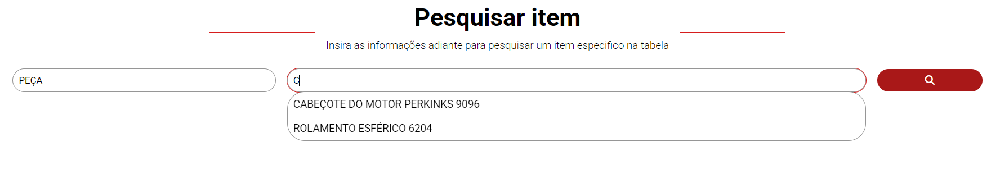
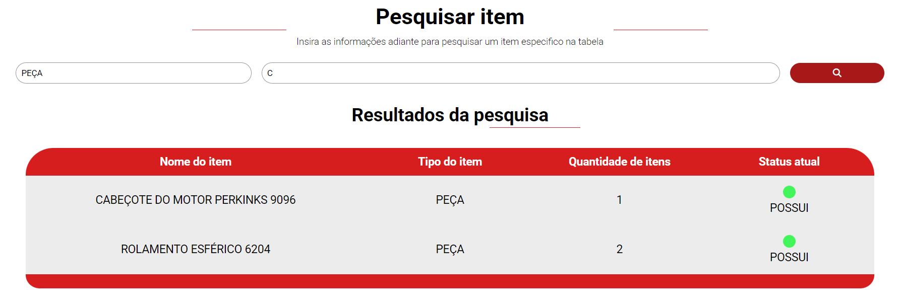
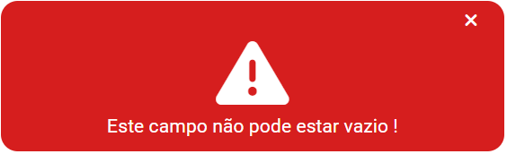
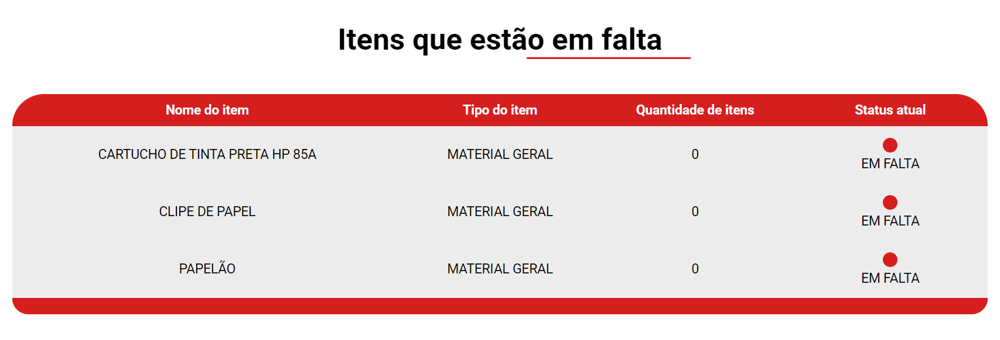
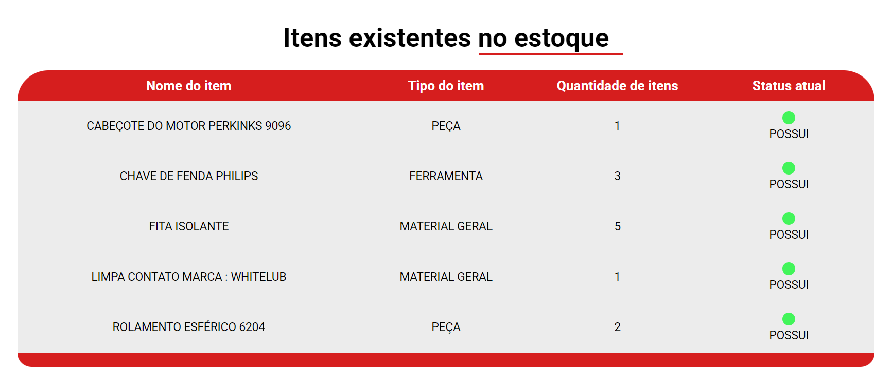

Opções de ajuda
Abaixo selecione a opção na qual você deseja ajuda

O
Abaixo selecione a opção na qual você deseja ajuda
Quando este botão é clicado o usuário é levado a uma
É recomendado o uso dessa funcionalidade para a execução de uma pesquisa mais refinida buscando uma peça ou ferramenta especifíca que pode ser feita pela própria equipe de manutenção
Como primeiro parâmetro de pesquisa é necessário digitar ou escolher o tipo do item desejado, importante destacar que este sistema possui uma ferramenta de sugestões que conforme esse item ou grupo de itens existir no banco de dados do sistema a mesma irá oferecer opções para autocompletar o campo do tipo de serviço, como mostra a imagem a seguir. Entretanto caso se queira fazer uma pesquisa sem passar o tipo de item é possível usando somente o nome/descrição do item entretanto recomenda-se para sempre especificar o máximo possível a pesquisa
Para o segundo parâmetro de pesquisa temos o nome/descrição do item que conta com o mesmo sistema de sugestão de nome que funciona da seguinte maneira se campo de tipo de item está vazio o programa irá sugerir sugestões através dos nome digitado procurando em todos os itens, entretanto se o campo do tipo estiver preenchido com um tipo como : PEÇA ou FERRAMENTA , as sugestões no campo de nome/descrição aparecerão somente derividas daquele tipo de item.

Passado os parâmetros e clicado no botão de pesquisa o sistema irá fazer a pesquisa de acordo com os parâmtros passados (tipo de item e nome/descrição do item). Se o sistema for bem sucedido na procura pelos itens irá exibir o item ou os itens numa tabela como mostra a imagem a seguir, mas caso não consiga achar nenhum item (seja por digitação erada ou pela não existência deste item ) o programa irá exibir que o item não existe no banco de dados. Importante apontar que a funcionalidade de pesquisa não funciona caso o nome/descrição de serviço esteja vazio


Quando este botão é clicado o usuário é levado a uma página de exibição da informação dos itens onde essa página possui dois botões sendo estes : Consultar itens em falta e Consultar itens existente do estoque , onde os mesmos respectivamente mostram as informações dos itens em falta e depois dos itens que o estoque possuí como mostra as imagens abaixo.
O uso dessa funcionalidade é indicado para analisar todos os itens de uma maneira geral para que assim se possa fazer um planejamento mais eficaz na compra de materiais e ferramentas , outra indicação de uso é que essa funcionalidade pode ser util para verificar as alterações que são feitas no sistema como adicionar , exlcuir ou editar arquivos , usar essa funcionalidade pode ser de grande avalia para verificar as informações gerais dos itens e sua conformidade.

